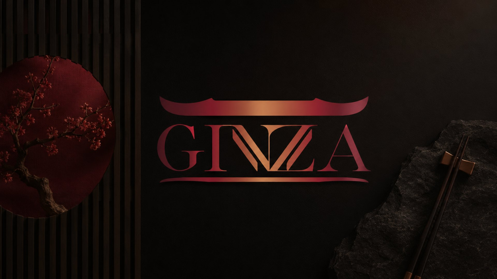
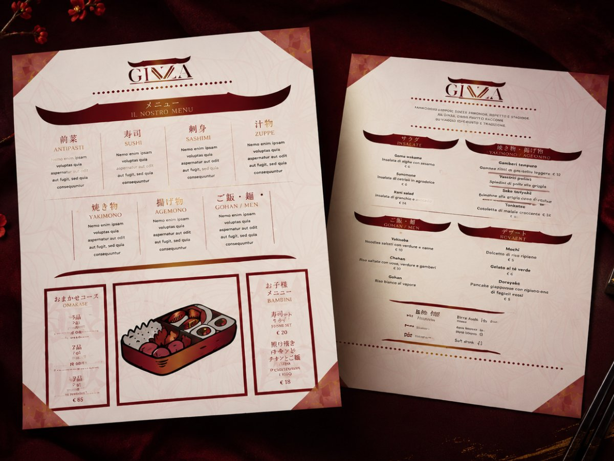

Ginza
Logo design e brand identity — Ristorante giapponese

Una nuova apertura, un'identità da zero.
Il progetto nasce per conto di Nuxi s.r.l., società di consulenza che mi ha affidato la progettazione dell'identità visiva di Ginza, nuova apertura di un ristorante giapponese a Cagliari.
L'esigenza era costruire un linguaggio visivo coerente e riconoscibile dall'inizio — dal logo alla presenza social — capace di comunicare l'identità del ristorante in modo essenziale e funzionale.
"La pagoda non come ornamento — come struttura. Le lettere del nome diventano le colonne che reggono la copertura. Il logo è già un'architettura."



Il segno nasce dall'estrapolazione della forma della pagoda — icona della cultura giapponese. Il logotipo in Kenjo diventa le colonne portanti: le lettere di Ginza reggono letteralmente la copertura della pagoda, ricreando la struttura architettonica del piano originale.
Non un simbolo sovrapposto al nome — un'unica forma in cui testo e icona sono la stessa cosa.
La palette lavora su un gradiente di colori caldi — marroni profondi, rosso, giallo arancione — che richiamano il cuore cromatico della bandiera giapponese. Un gradiente deciso ma mai aggressivo, come i sapori della cucina che rappresenta. Al Kenjo viene affiancato Mukta, famiglia moderna, versatile e umanista, per le declinazioni funzionali del sistema. Il brand si estende nei coordinati social: cornici e watermark per le fotografie, caroselli testuali per la comunicazione digitale — un sistema pronto a presidiare ogni superficie con coerenza e riconoscibilità.
Il lavoro per Ginza non si è fermato all'identità. Dalla stessa radice visiva sono stati progettati tre menu distinti — alla carta, all you can eat e bento — ciascuno con una logica d'uso diversa ma perfettamente coerente con il sistema madre. Il menu come oggetto editoriale che orienta l'esperienza prima ancora del cibo.